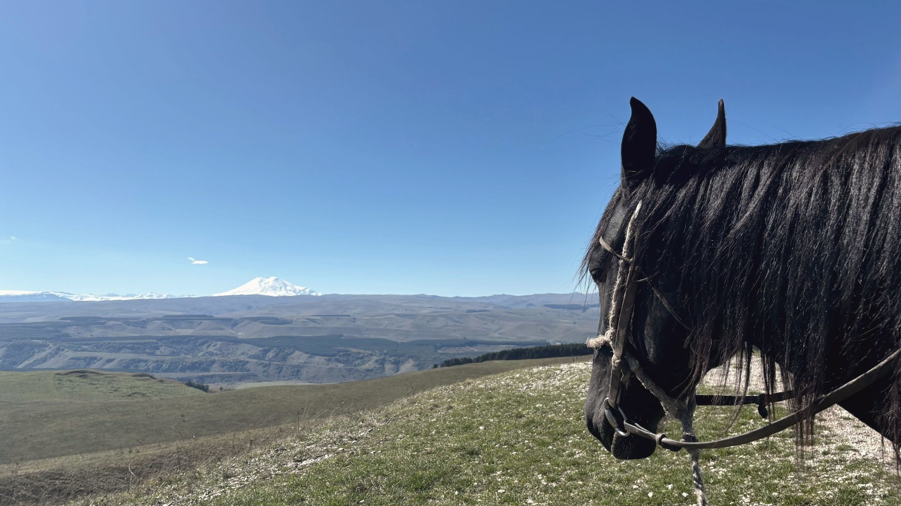
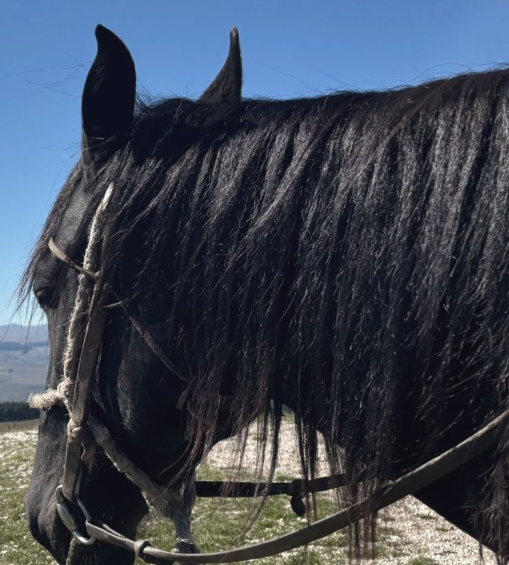
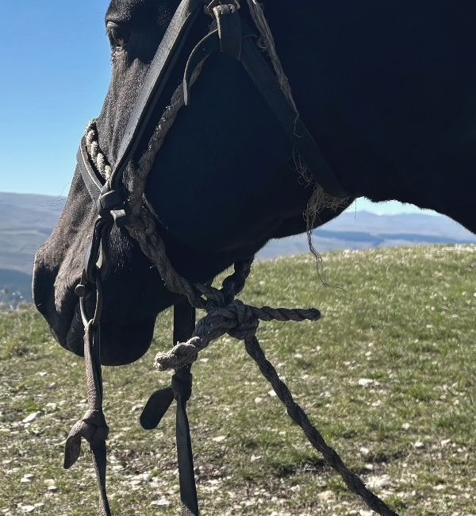
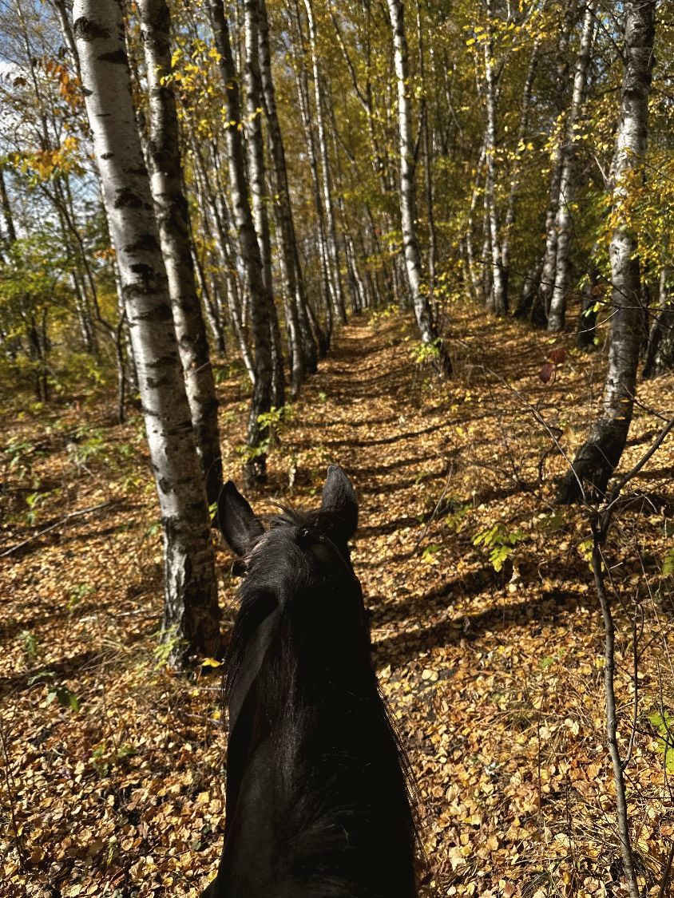
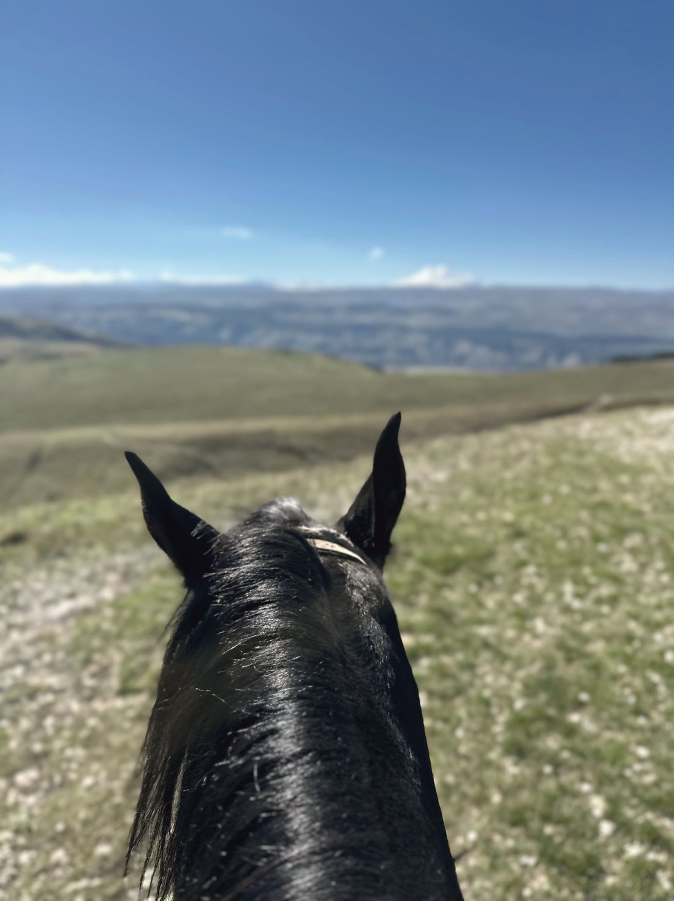
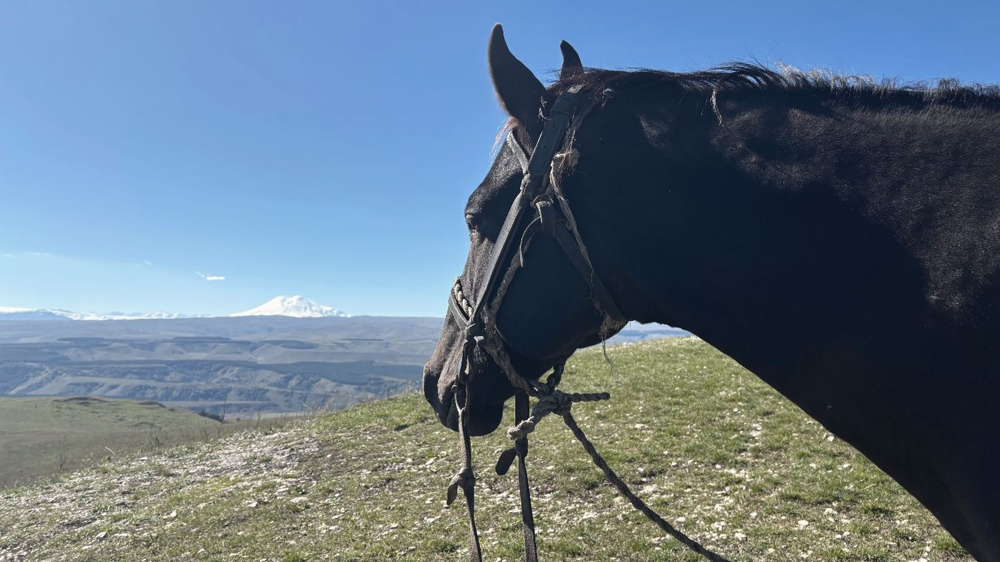
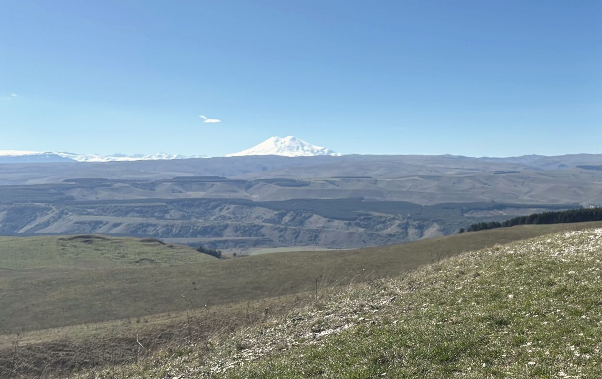
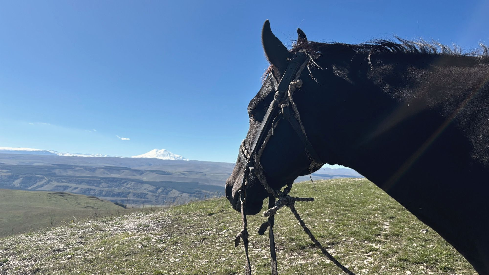

01Олимпийский парк
Первое знакомство
Для тех, кто давно хотел попробовать, но немного страшно. Знакомимся с лошадью, спокойно разбираем основы и выходим на лёгкую прогулку без спешки.
Выбрать прогулку
Конные прогулки в горах — туда, где город остаётся внизу, а впереди открывается Кавказ. Можно впервые в седле.
Есть Кисловодск, который видно из окна машины. А есть тот, до которого добираются верхом: слышно шаг лошади, меняется воздух, и город тихо исчезает за спиной. Кавказ начинается там, где заканчивается дорога.


Карачаевская порода веками складывалась в верховьях Кубани — для крутых троп, перепадов высоты и долгой работы в горах. Нам важны её выносливость, рабочий характер и уверенность на знакомом рельефе.
Маршрут выбираем не ради красивого названия, а с учётом рельефа, состояния тропы и подготовки лошади.
Подбираем лошадь под человека и темп группы, а не выдаём ближайшую свободную.
Перед выходом объясняем, как подойти, сесть, держать повод и общаться с лошадью без суеты.
Рассказываем о карачаевской лошади честно и современно — без театрального «этношоу».
От первого знакомства с лошадью до большого маршрута в горы. Мы продаём не точку на карте — мы создаём день, который хочется запомнить.
Для тех, кто давно хотел попробовать, но немного страшно. Знакомимся с лошадью, спокойно разбираем основы и выходим на лёгкую прогулку без спешки.
Выбрать прогулку
Красивый, понятный маршрут, когда хочется провести время с лошадью и увидеть Кисловодск иначе — без большой горной нагрузки.
Выбрать прогулку
Город остаётся внизу, а перед вами раскрываются холмы и длинные линии Кавказа. Первый настоящий горный маршрут — без ощущения, что взялись за слишком сложное.
Выбрать прогулку
Для тех, кто хочет действительно уйти в горы. Наверху — простор, Кавказский хребет и, если позволит погода, Эльбрус.
Выбрать прогулку
Прогулка ради высоты и пространства: красивые виды, фотографии и Кавказ без целого дня в седле.
Выбрать прогулкуДинамичный маршрут для тех, кто уверенно держится в седле. Перед выходом инструктор оценивает навыки — безопасность важнее обещанной скорости.
Выбрать прогулкуПрограммы, где важна не только тропа, но и время дня: свет, тишина и возможность никуда не торопиться.
Даже если вы никогда не сидели в седле: подберём лошадь, всё покажем и выберем маршрут под вас.
Подбираем лошадь под вас. Показываем, как подойти, сесть и держать повод. Отвечаем на все «а если».
Идём в темпе группы, инструктор рядом. Лошадь знает рельеф — вам остаётся смотреть по сторонам.
Наверху — простор и Кавказский хребет, а в ясную погоду — Эльбрус. Ради этого вида сюда и возвращаются.
Хорошая прогулка начинается не с красивого седла, а с человека, которому вы доверяете лошадь, маршрут и своё первое впечатление от верховой езды.
Для Амира лошади — не туристическая услуга, появившаяся вчера. Он знает эту работу изнутри: характеры, состояние, поведение лошадей и то, как меняется маршрут в реальных горных условиях.
Помогает тем, кто впервые садится в седло или боится. Отвечает за атмосферу, новые программы, женские форматы и фотопрогулки — чтобы поездка была красивой не только на фото.
Сопровождает группы, следит за темпом и помогает чувствовать себя увереннее в седле. В горах задача инструктора — не развлекать любой ценой, а спокойно довести группу туда и обратно.
Фотосессии, женские прогулки, особые события и путешествия на несколько дней. Чистый семейный формат: без алкоголя и навязанной «вечериночной» эстетики.
Спокойная лошадь, красивая локация и время. Можно на земле или несколько кадров в седле.
→Небольшой маршрут верхом с остановками в красивых точках — и впечатление, и живые кадры.
→Закрытый формат для семьи или женской компании. При желании организуем фотографа.
→Небольшая женская группа и девушка-инструктор: спокойствие, приватность и поддержка.
→Подруги, лошади, маршрут, фотосессия и чаепитие или пикник.
→Тихая точка, правильное время, при необходимости — фотограф и небольшое оформление.
→Знакомство с породой, подготовка к маршруту — и только потом в седло.
→Первый день — знакомство и лёгкая прогулка, второй — большой горный маршрут.
→Несколько маршрутов, красивые точки, пикник и фотосъёмка по желанию.
→Путешествие о породе, людях, местности и культуре, в которой эти лошади выросли.
→
«Зов» — это момент, когда после первой прогулки понимаешь, что хочется вернуться. Начните с заявки — остальное мы возьмём на себя.
Да. Подберём спокойную лошадь, всё покажем без спешки и выберем маршрут под вас — например, «Первое знакомство» или «Первый горизонт».
Закрытую обувь с небольшим каблуком и длинные брюки. В горах погода меняется быстро — возьмите ветровку даже в жару и солнцезащитный крем.
Да, для этого есть фотосессия с карачаевской лошадью: можно остаться на земле или сделать несколько кадров в седле.
Спросите Тулпара — он подберёт прогулку за два вопроса. Или оставьте заявку с пометкой «Помогите выбрать», и мы предложим вариант сами.
Оставьте параметры поездки — мы свяжемся, уточним детали и подберём лошадь и маршрут.